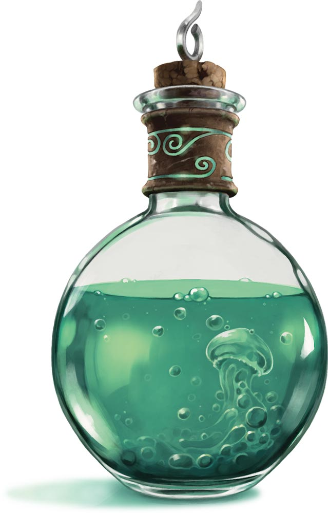

Potion of Water Breathing

The people mainly interested in this potion are treasure hunters that hope to plunder massive underwater temples or shipwrecks, the materials are quite expensive so not just anyone can afford it.
Ingredients
- Alligator Foot
- Wolfsbane
- Gold Flake
- Water Buffalo Tooth
- Gills of the Mithril Bass
Instructions
- Coat the walls of the bottle with the gold flakes.
- Skin the Alligator Foot and sear the skin, then place it in the bottle.
- Grind up the Wolfsbane and the Water Buffalo Tooth until you have a paste, and then place into the bottle.
- Put the gills into the bottle, and when the gills touch the water recite the incantation, "Aqua oxygenium habet, ergo respirare possum".
- Let the Alligator skin soak for an hour, then carefully remove it.
Once the soak is completed the potion is ready for consumption. The average Water Breathing potion will allow you to breath underwater for 2 hours.
You can increase this mainly by the purity of the gold flakes, as well as the size of the Mithril Bass gills.
Return to main page